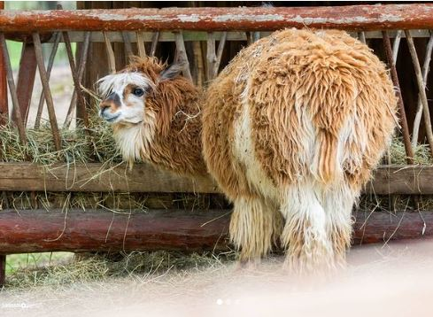
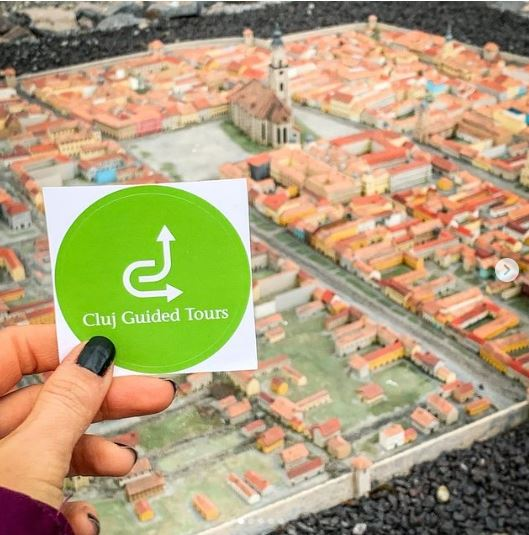

În trecut, am explorat Clujul printr-un Instagram City Guide în care am surprins modul cum ai putea să-ți
petreci 48 de ore în Cluj outdoor. La momentul respectiv, scopul a fost să identificăm modalitățile potrivite
atât pentru turiști, cât și pentru localnici de a profita la maxim de ceea ce are orașul de oferit. Cu același
scop în minte, dar dintr-o perspectivă ușor diferită, am pornit în redactarea acestui material, care surprinde
sugestiile noastre cu privire la cum ai putea să-ți petreci o zi cu rudele, când vin în vizită, prin Cluj și
apropiere. Așa, a rezultat un itinerariu potrivit pentru familii cu copii care cuprinde activități inedite
pentru tot parcursul zilei. Programul pe care l-am conceput începe dimineața, devreme, și se termină seara,
târziu. Așadar, hai să vedem cum poți să-ți petreci o zi cu rudele prin Cluj și apropiere.

Cum să-ți petreci dimineața
Dacă pentru tine și persoanele care te vizitează nicio dimineață nu poate să înceapă fără o cafea delicioasă, atunci îți sugerăm să-ți începi ziua cu un drum făcut la Koffer, pe Bulevardul 21 Decembrie 1989, la numărul 46. Dacă vă însoțesc și copii, e bine de știut că meniul Koffer include și opțiuni potrivite pentru gusturile acestora – ca de exemplu, ciocolata caldă absolut delicioasă și fresh-ul sănătos cu care se recomandă să ne începem ziua. În timp ce copiii răsfoiesc cărți sau desenează la mesele colorate, ori pregătesc bunătăți la bucătăria de jucărie, voi vă puteți bucura împreună de o cafea de specialitate savurată în liniștea dimineții. Veți avea nevoie de ea ca să faceți față miilor de pași parcurși pe parcursul zilei care stă să înceapă.
Cum să-ți petreci dimineața
După ce v-ați savurat cafeaua la Koffer, îți sugerăm să iei Clujul la pas prin Piața Avram Iancu înspre Centru. În drumul tău, vei da peste clădirile colorate, recent renovate, din Piața Mihai Viteazul care așteaptă să fie fotografiate și postate pe Instagram (folosind, bineînțeles, hashtagul #clujlife). Din Piața Mihai Viteazul vei da, curând, în Bulevardul Eroilor, una dintre principalele artere comerciale din oraș, unde îți sugerăm să faceți o oprire la Tramvay, shopul cu specific turcesc. Aici veți găsi produse de patiserie turcești (turkish delight) alături de narghilele și accesorii pentru cadouri și casă din ceramică orientală. Continuând, apoi, în josul străzii Napoca, veți da peste recent renovata Casă de Cultură a Studenților urmând să ajungeți, apoi, la Grădina Botanică Alexandru Borza. Aici vă așteaptă grădina japoneză, turnul de apă și statuile din grădina botanică. Cât timp sunteți aici, nu uitați să vizitați și serele grădinii botanice.
De îndată ce ai explorat și fotografiat în detaliu Grădina Botanică Alexandru Borza, e momentul să te întorci în centrul Clujului: în Piața Unirii. Aici așteaptă să fie admirate obiective turistice clasice precum: Monumentul lui Matei Corvin, Catedrala Romano-Catolică Sfântul Mihail, Muzeul de Artă, Palatul Jósika, Palatul Rhédey, Casa Schleunig și Strada în Oglindă. Ca un hidden gem, în josul Străzii în Oglindă, se află tavanul pictat al clădirii de pe Iuliu Maniu, nr. 38, care merită văzut. De îndată ce ai epuizat obiectivele turistice din Piața Unirii, peste drum, în Piața Muzeului, te așteaptă unele noi. Este vorba despre Casa Memorială Matei Corvin, Biserica Franciscană, Obeliscul Carolina, Palatul Mikes și Muzeul Național de Istorie a Transilvaniei. În drumul dinspre Muzeul Național de Istorie a Transilvaniei către Parcul Central te așteaptă Casa Tranzit, o clădire colorată care poate fi categorizată ușor ca făcând parte din categoria „Instagramabilă / eye-candy” a Clujului.
Apoi, de îndată ce ajungi în Parcul Central, te încurajăm să încetinești și să te bucuri de soarele dimineții, aerul curat și lentoarea plimbării. Aici vei putea admira clădirea impunătoare și elegantă a Casino Centru de Cultură Urbană, clădirea restaurantului Chios și lacul care poartă același nume, pe care se plimbă oameni în mulți flamingo roz ce-ți fură privirea. Îți sugerăm să fii cu ochii-n patru, căci tot pe aici pot fi observate trecând deseori și „tramvaiele colorate ale Clujului”. În 2017, artistul stradal KERO le-a dat culoare unor tramvaie care circulă pe această linie și a intitulat picturile murale „Tramvaie Colorate – Galerie de artă pe patru roți”. Apropo, dacă te pasionează picturile murale te invităm să te abați de la traseu și să explorezi mai multe, aici. Ulterior, te invităm să traversezi Podul Regina Elisabeta înspre locul nostru favorit pentru a admira panorama orașului: Cetățuia. Pentru o gustare rapidă with a view, poți face o oprire la restaurantul Hotelului Belvedere – locul de unde priveliștea asupra orașului îți taie respirația.
Ce să faci în jurul orei prânzului
Pentru ora prânzului am adunat trei opțiuni de restaurante kids-friendly, aflate în proximitatea Parcului Central – și care te întâmpină atunci când cobori de la Cetățuie. Chios Social Lounge oferă nu numai un meniu extrem de variat (din care noi îți recomandăm să încerci tagliatelle cu piept de pui grill, spanac și semințe de in), ci și un spațiu de joacă cu tobogan și leagăn pentru copii. Acestea sunt amplasate în imediata apropiere a terasei Chios Social Lounge. Pe lângă acestea, priveliștea pe care ți-o oferă direct înspre lacul Chios reprezintă un alt plus pentru această locație de prânz. La Livada, dacă vii în timpul săptămânii, la ora prânzului te poți bucura de un meniu business (un altfel de „meniul zilei”) în grădina lor interioară, pe tonuri de muzică live. Pentru copii, aici găsești un loc de joacă special amenajat pe terasă și multe baloane sau desene de colorat. Colin’s Gastro Pub oferă, pe de altă parte, un spațiu destinat copiilor cu tobogan, băncuțe și un meniu baby-friendly conceput special pentru micuți.
După ce te-ai energizat cu niște preparate delicioase la ora prânzului, e momentul să faci o activitate de familie împreună cu rudele tale, în Cluj. În funcție de ceea ce preferați, noi am gândit trei tipuri de recomandări. Pentru cei dintre voi care fie sunt pasionați de echitație și cărora le place activitatea fizică, fie își doresc să încerce ceva nou, vă recomandăm să participați la un curs de echitație marca Napoca Sport Horse. O ședință de inițiere la ei durează 30 de minute și costă 100RON/persoană; mai multe detalii despre serviciile și tarifele lor poți descoperi aici. Alternativ, dacă preferați mai degrabă arta și cultura, recomandăm o vizită la muzeele din centrul Clujului. Favoritele noastre și, totodată, cele mai la îndemână par a fi Muzeul de Artă, Muzeul Etnografic și Muzeul Național de Istorie al Transilvaniei. Alternativ, dacă muzeele nu sunt pe placul copiiilor care însoțesc familia aflată în vizită, se poate consulta programul Teatrului de Păpuși Puck aici.
Cu ce activități ai putea să-ți umpli timpul după-masa?
După activitatea de familie în Cluj, vă așteaptă trei variante de activități în apropierea orașului. Pentru aceia cu înclinații sportive și pline de energie dintre voi, la 30 de minute de mers cu mașina distanță față de Cluj, în comuna Feleacu, așteaptă Adrenalin Park, primul parc de aventură din zona Clujului. Acesta este printre cele mai cunoscute și vizitate de cei care locuiesc în oraș, datorită multitudinii de trasee și activități pe care le poți practica acolo. Este situat în comuna Feleacu, lângă Casele Micești și a fost dintotdeauna o atracție atât pentru cei mici, cât și pentru adulți. Există 13 trasee aeriene dintre care 3 pentru copii, unul de inițiere pentru adulți, 7 trasee de aventură împărțite pe diferite nivele de dificultate și două tiroliene. Mai mult, există 132 de jocuri dintre care 42 pentru copii, ateliere de escaladă – 1 turn de escaladă, un joc tip Scara lui Iacob, 1 traseu de cățărare în echipă și un leagăn uriaș suspendat, cu vedere spre pădure. Dacă-i vizitezi de luni până joi, te poți bucura de facilitățile lor până la ora 19:00. Dacă îi vizitezi, în schimb, în weekend, poți sta până la ora 20:00. Înainte să dai o fugă până la ei, verifică programul și fă-ți o programare aici.
În schimb, dacă îți plac animăluțele și preferi o activitate ceva mai light, le poți face o vizită celor de la Moara de Vânt, în Sălicea, la 27 de minute de mers cu mașina distanță față de Cluj. „Libere în țarcuri, voliere și cotețe, vă așteaptă peste 400 de animale din peste 60 de specii cum ar fi iepurași, rățuște, gâște, găini, bibilici, fazani, păuni, porumbei, prepelițe, porcușori de Guineea, capre, alpaca, pecari, porci pitici americani, cerbi lopatari, cerbi carpatini, papagali, curci, ponei, măgari, lame, mufloni, maimuțe, cai, ulii, șoimi, văcuțe pitice Zebu, potârnichi de California, broaște țestoase, ratoni, ursuleți năsoși, oi de camerun, veverițe”, ne spun ei. Pe lângă mângâiat animale, parcul mai oferă următoarele activități recreative: călărie pe cai și pe ponei, plimbări de agrement, plimbări cu sania sau căruța, în funcție de anotimp, plimbări cu trenulețul, loc de joacă, trambulină, minigolf și parc de aventură cu trasee suspendate de cățărat și tiroliene. Dacă cumva vă întrebați dacă ați putea să petreceți noaptea la ei, răspunsul este da; pentru informații cu privire la închirierea camerelor, sunați la numărul 0744 522 700.
Cea de-a treia recomandare de activitate de făcut în apropierea Clujului pe care ți-o aducem este Salina Turda – locul unde ai putea să petreci chiar și o zi întreagă fără să te saturi. Amplasată la 30km distanță față de oraș, va dura aproximativ 45 de minute de mers cu mașina să ajungi aici. De îndată ce ai ajuns, o să-ți dai seama că a meritat drumul. Salina Turda este un adevărat muzeu de istorie a mineritului în sare și cea mai impresionantă de acest gen din România. Pe lângă frumusețea locului, aici puteți petrece câteva ore bucurându-vă de activități relaxante, precum o plimbare cu barca în jurul insulei de sare, un joc de minigolf, bowling sau biliar, o tură cu roata uriașă sau puteți sta liniștit în compania unei cărți, în timp ce respirați-inspirați-respirați-inspirați, căci sunteți într-un loc foarte prietenos cu plămânii voștri. Indicatoare către ea sunt la tot pasul în oraș, deci nu aveți cum să o ratați. Bilete online, informații despre acces, vizitare și tarife pot fi găsite aici.
Unde te găsește ora cinei
Dacă ți s-a făcut foame după orele petrecute făcând mișcare la Adrenalin Park, poți lua cina la Restaurantul Adrenalin Park, unde terasa-restaurant oferă (doar în weekend-uri) un meniu variat atât pentru adulți, cât și pentru copii. Ei au lansat într-una din verile recente primul lor meniu à la carte, care conține nu numai specialitățile casei, ci și o bucătărie tipic ardelenească cu influențe internaționale. Meniul oferit include supe locale – cu ciuperci de pădure, ciorba de burtă și faimoasa supă gulyás de vită, seria de burgers Adrenalin servite ca specialitatea casei și preparatele la grătar. Deoarece familiile cu copii formează o mare parte din oaspeții parcului de aventură, terasa-restaurant Adrenalin Park oferă porții pentru copii la 60% din prețul porțiilor de adult, cu excepția categoriei burgers și sosuri. Ei oferă și un burger special pentru copii: KIDS Burger – cu carne de pui, servit cu cartofi prăjiți alături. Pentru rezervări, apelează-i la numărul de telefon 0732 040 434.
Dacă optezi pentru Moara de Vânt, ar trebui să știi că în Sălicea se află și unul dintre restaurantele noastre favorite din apropierea orașului, La Mesteceni. Aici fie alegeți să degustați preparatele delicioase din meniu și să vă relaxați în grădina de vară, fie vă găsiți un loc lângă piscină și savurați un cocktail răcoritor, în ton cu vara. Restaurantul pensiunii vă îmbie cu preparate delicioase, deosebite, servite într-o atmosferă familială și prietenoasă, indiferent dacă sunteți sau nu oaspeții pensiunii. Pe terasa restaurantului puteți savura preparate gustoase înconjurați de un peisaj de vis care cu siguranță vă oferă clipe de relaxare. Printre preparatele care ne-au stârnit interesul, menționăm: supă cremă de praz cu krantz de pancetta (28RON), file de doradă cu legume crocante, orez alb și dressing (52RON) și paste cu creveți și sos de vin alb (52RON). Pentru cei mici care nu au chef de bălăceală, locul de joacă cu nisip, leagăne și tobogane poate fi alegerea perfectă. Prețul pentru o zi la piscină pentru adulți este de 40 lei de luni până vineri și 50 lei în weekend. Rezervare obligatorie aici.
Visit W3Schools.com!În schimb, dacă alegeți să mergeți la Salina Turda, aici vă așteaptă restaurantul Sarea-n bucate, care se bucură de o localizare privilegiată, într-un cadru natural, sub soarele îmbietor care învăluie dealurile Turzii. Acesta oferă ocazia perfectă pentru câteva ore de răsfăț culinar. Aici poți să mănânci preparate sănătoase, crescute în propria lor grădină de legume şi zarzavat, sau din livada de pomi fructiferi, din care este produs suc de mere BIO. Terasa este extrem de primitoare și încăpătoare, există și o zonă de grill, iar în vecinătate se află podgoria Cramei La Salina, de unde au luat naștere vinurile ISSA, deci este de la sine înțeles că nu vă puteți potoli doar foamea într-un mare fel dacă mergeți aici, ci și delecta simțurile cu un vin nobil. Toate aceste elemente îmbinate fac din Sarea-n bucate un loc ideal pentru o masă tihnită alături de prieteni ori familie. Îți poți rezerva locurile pentru cină la Sarea-n bucate apelându-i la numărul de telefon 0730 632 792.
Iar dacă preferi să nu preiei tu rolul ghidului atunci când te vizitează rudele acasă, la Cluj, poți apela cu încredere la Cluj Guided Tours. Ei organizează tururi free – care sunt cea mai bună ocazie de a cunoaşte oraşul fie că eşti localnic sau un vizitator/călător. Totodată, la ei poți apela și pentru tururi de oraș care reprezintă o invitație de a descoperi povestea „inimii” Transilvaniei, oferindu-vă posibilitatea de a explora istoria fascinantă, o frumoasă arhitectură, dar şi bine cunoscutele atracții turistice ale oraşului. Tururile de o zi, pe de altă parte, se concretizează împrejurul orașului, în diferite destinații precum: Salina Turda & Cheile Turzii, Delta Transilvaniei, Rimetea, Colțești și Cetatea Alba Iulia, Sighișoara, Sibiu și, respectiv, zona Bran. Ca să stabilești detaliile cu ei, te invităm să-i contactezi din timp la numărul de telefon 0745 043 025.
Tu ce altceva ai mai adăuga pe lista unei zile de petrecut cu rudele prin Cluj și apropiere?
Prieten, explorator, cel cu un plan: ClujLife – Te scoate din casă!
De ce facem ceea ce facem?
La început a fost… nimeni și nimic care să ne vorbească despre viața orașului, despre ce se întâmplă în materie de evenimente și localuri pe plan local, niciun motiv care să ne scoată din casă.
Everyday we’re clujlife(ing). Ieșim din casă, vedem ce se întâmplă, ce mai e nou, ce mai zice lumea, ce-ar mai fi interesant de făcut, și apoi îți povestim și ție. Facem asta din Ianuarie 2008. Prezența aceasta îndelungată ne-a adus destule cunoștințe și curaj încât să abordăm subiecte pe care nu le ”atinge” nimeni. Avem informații pe care nu le găsești în altă parte și acces la mulți oameni din varii domenii.